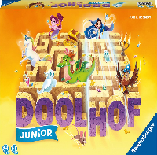

Doolhof Junior

Informatie van spel
Doolhof Junior is een leuk en spannend bordspel voor jonge kinderen, geschikt voor 2 tot 4 spelers.
Het is een eenvoudig spel met makkelijke regels, ideaal voor het hele gezin.
In Doolhof Junior verschuiven spelers gangen in een magisch doolhof om verborgen schatten en doelen te bereiken.
Door slim te schuiven kunnen spelers hun weg vinden of juist anderen blokkeren!
Het spel duurt meestal tussen de 15 en 30 minuten. De spelregels zitten in het pakket.
Doolhof Junior kost rond de €20 en is geschikt voor kinderen vanaf 4 jaar.